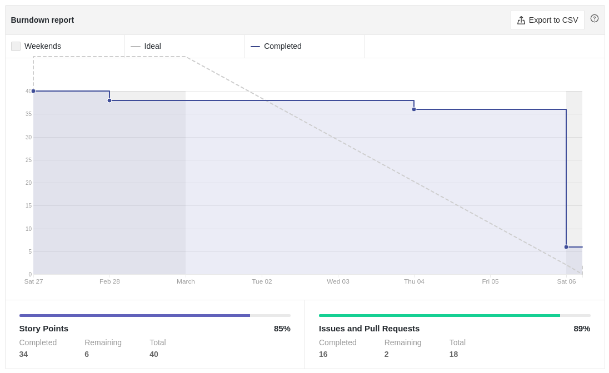
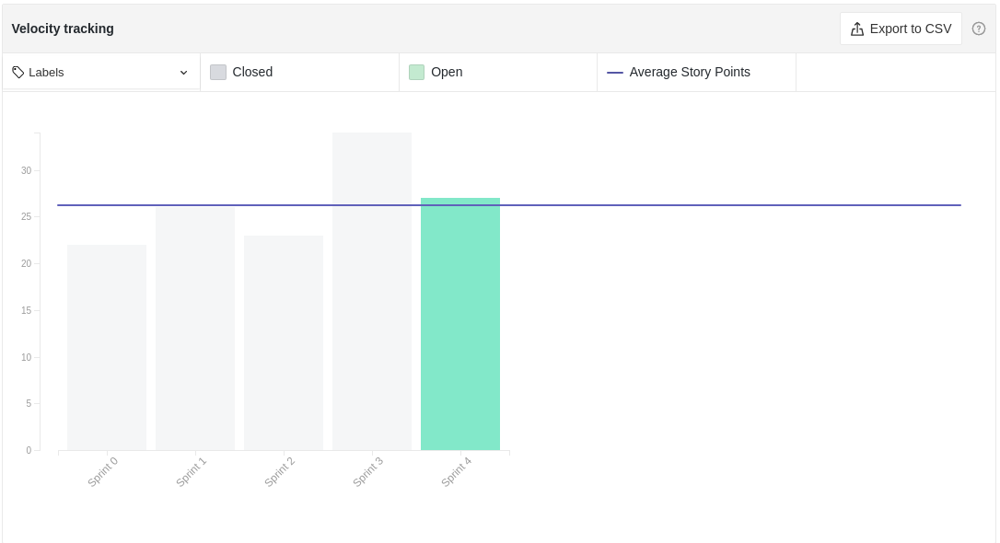
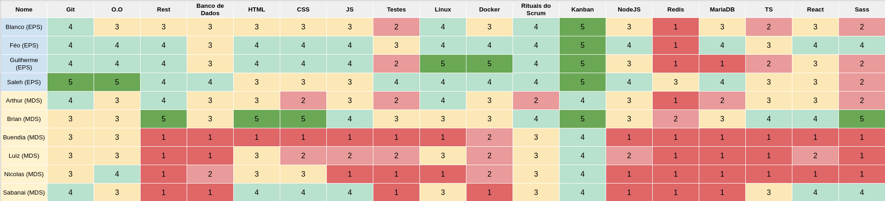
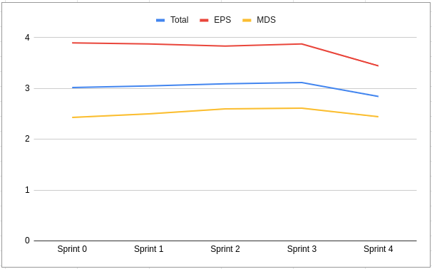
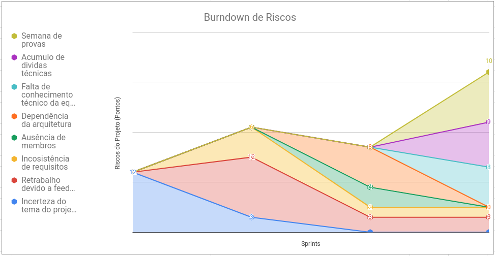
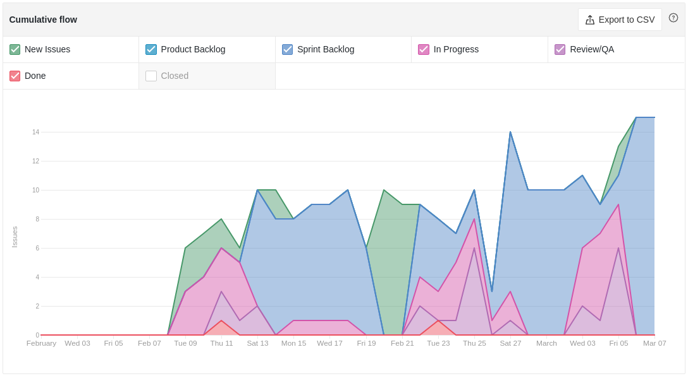
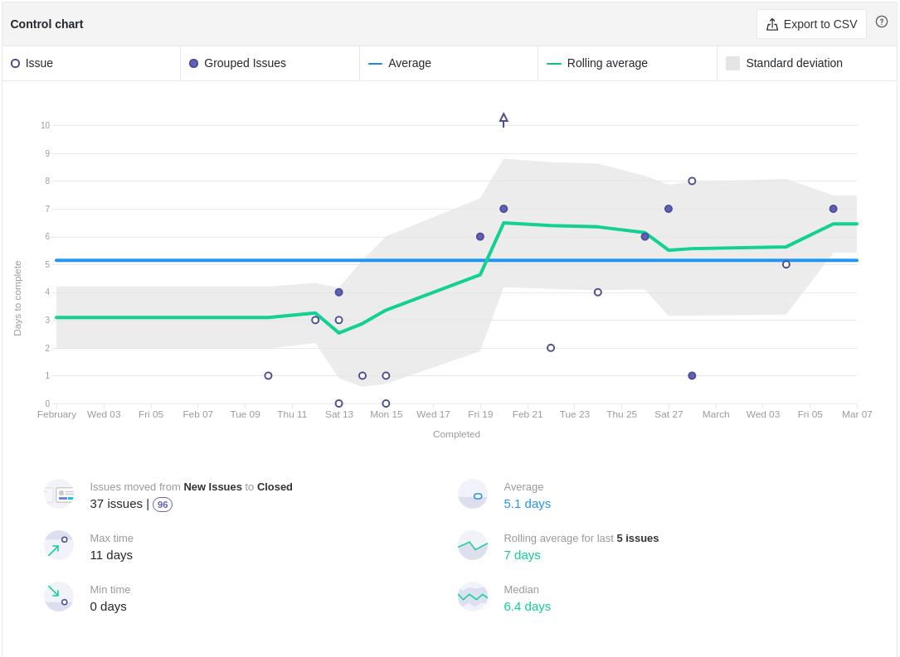
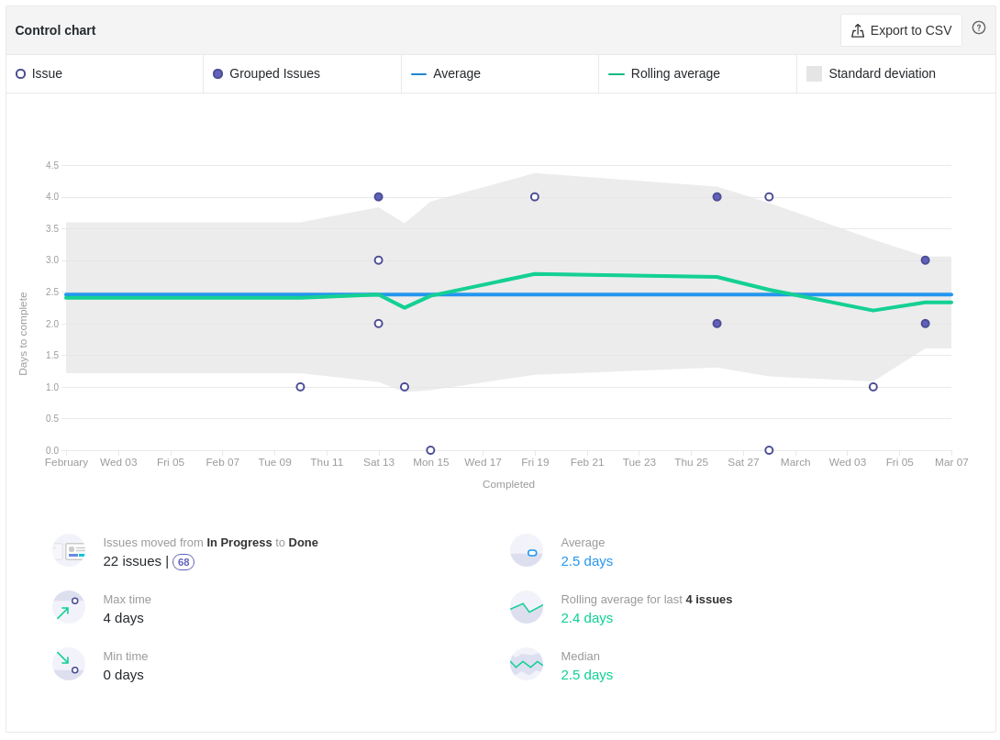
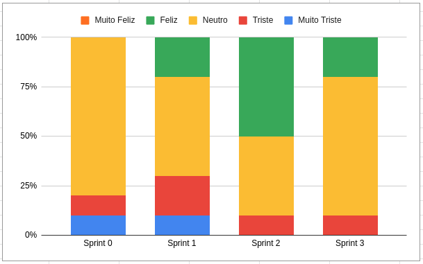

Review da Sprint 3
Histórico de revisão
| Autor | Mudanças | Data | Versão |
|---|---|---|---|
| Pedro Féo | Criação do documento | 07/03/2021 | 1.0 |
Avaliação do Scrum Master
- Como é possível ver pelo burndown as issues continuam sendo fechadas apenas na sexta feira, houveram reclamações sobre o tempo de correção dos PRs, porém muitos PRs só estão sendo fechados no fim da semana também.
- A Sprint 3 teve um aumento considerável de pontos a serem realizados, porém duas issues não foram completas. Com isso iremos diminuir a quantidade de pontos para a próxima sprint para tentarmos encontrar o valor ótimo de pontos por sprint.
- Nessa sprint adicionamos mais 6 campos no quadro de conhecimento, relacionados às tecnologias que usaremos durante o projeto, por conta disso, houve uma queda expressiva no gráfico de conhecimento do time.
- No gráfico de riscos, houve uma queda dos ricos encontrados nas últimas sprints, principalmente a dependência na arquitetura, que foi escolhida durante a sprint. Três novos riscos foram levantados, sendo eles a Semana de Provas para a maioria dos MDS, que pode afetar o rendimento do time, o acumulo de dividas técnicas, pois duas issues se tornaram dívidas técnicas e a falta de conhecimento técnico da equipe, pois o time de EPS decidiu não dar dojos sobre as novas tecnologias escolhidas e sim passar cursos e materiais online sobre as tecnologias, que os membros pudessem assistir de forma assíncrona, isso resulta em uma falta de garantia do nivelamento da equipe, que pode vir a impactar o time durante as sprints ainda a vir.
- o cycle time da equipe subiu, o que indica que o tempo para conclusão de PRs aumentou, chegando um valor bem próximo a 7 dias para seus fechamentos, esse valor é bem preocupante tendo em vista que as sprints também duram cerca de 7 dias.
- Foi adicionado também o cycle time das issues a partir do momento que começam a ser feitas, indicado pela pipeline In Progress, até o momento de conclusão. Esse tempo está com uma média de 2.5 dias, o que indica que para esse grande período de Abertura das issues até seus fechamentos é devido a uma demora para que os membros começem a realizar as issues.
- De acordo com o gráfico de humor, muitos membros estão com o humor neutro, alguns relataram continuar animados em mexer com código, outros relataram não ter aprendido tanto durante a sprint.
Reports
Tarefas Realizadas
Burndown

Velocity

Conhecimento dos membros
Quadro de Conhecimentos

Gráfico de Melhoria

Riscos

Cumulative flow

Cycle time
 
Gráfico de Humor
